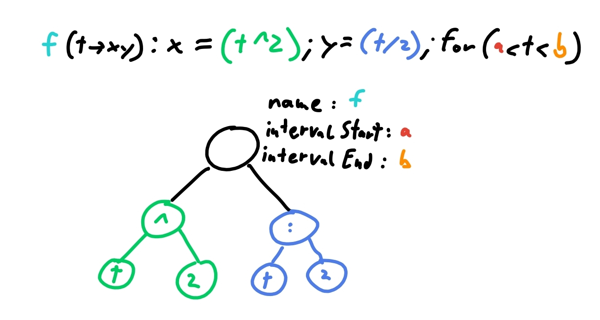
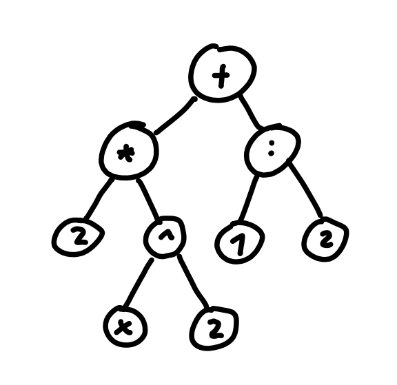
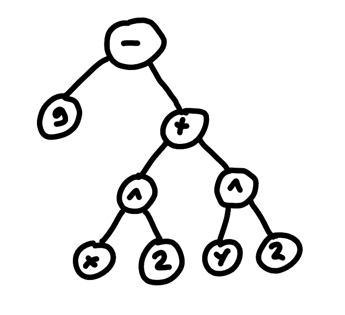

EquationParser
Variables
debug:
Toggles all the debug prints.
name:
The name of the function.
isFunction:
Whether it is a function or not. If it is a function it will be rendered by the FunctionRenderer.
isParametic:
Whether it is parametric or not. If it is a parametric function it will be rendered by the ParametricRenderer.
parametricParsing:
Flag used when parsing parametric functions to enable different handeling of things. For example: When enabled a variable with the name “t” will not be added to the variable list.
parametricIntervalParsing:
Flag used when parsing the interval of parametric functions, so that the interval cannot depend on “t”.
parseBetweenBrackets:
Flag used when parsing between brackets to skip some of the transforming in transformString():.
controller:
The ApplicationController used by many methods. Mainly for handeling variables but also for parsing ConditionNodes.
oldVarCache:
Serves as a backup of the variable list. With this it is possible to revert to the state before adding variables through invalid input.
bracketID:
The magic number representing the state for said element.
numID:
The magic number representing the state for said element.
varID:
The magic number representing the state for said element.
operatorID:
The magic number representing the state for said element.
specialFuncID:
The magic number representing the state for said element.
functionID:
The magic number representing the state for said element.
parametricID:
The magic number representing the state for said element.
specialOpID:
The magic number representing the state for said element.
Methods
transformString():
Method for the following things:
- sanitizing the string.
- replacing all constants with their number.
- adding the unwritten multiplikation between brackets for example: “(2x)(x-1)” -> “(2x)*(x-1)”
- moving the condition to the back for example: “if(x<0) x2” -> “x2 if(x<0)”
- transforming for the different equation types and setting isFunction: and name:
Examples:
- f(x)=x2 -> x2
- y=2x -> 2x
- x2-y2=9 -> 9-(x2-y2)
- sin(2e) + 2 -> sin(2(1.6180339887498948))+2
replaceConstants():
Method for replacing constants in a string with their number counterpart.
parseString():
Given a string it will decide wheter to call parseEquation(): or parseParametics():
There also is another overloaded version which handles given functions.
parseParametics():
Method for parsing parametric functions. They have the following form: “f(t->xy):x=(t);y=(t);for(a<t<b)”.
Examples:
- “f(t->xy):x=(t2);y=(t/2);for(a<t<b)”

parseParametricInterval():
Method that parses a given String, which is part of an parametric interval, and returns the resulting EquationNode.
parseEquation():
Given a string and ApplicationController it builds the EquationTree by adding the nodes extracted by getNextNode():.
Examples:
- “2x2+(1/2)”

- “x2+y2=9”

discardVars():
Method for removing all the variables added by invalid input.
Since when parsing it is only checked at the end if the resulting EquationTree is valid. And it would be annoying if one would have to manually remove all the variables added in this process.
handleAdvancedInput():
To handle unwritten multiplikation and to the power of negativ numbers.
For example:
- 2(x2) -> 2*(x2)
- 3x -> 3*x
- xsin(x) -> x*sin(x)
- x-2 -> x(-2)
checkIfFunction():
Method to check wheter a given string is a function or not. It also sets the name if it is in the form of “*(x)”.
For example:
- y=x -> is a function
- z(x)=x2 is a function (name: z)
- wow(x)=x is not a function
getBetweenBrackets():
Method for getting the string between brackets.
For example: “(sin(x)+2)” -> “sin(x)+2”
getValuesInBrackets():
Method for getting the values seperated by comma between brackets. Used for special Operators (log, root)
For example: “root(2,root(2,x))” -> {“2”,“root(2,x)”}
addBelow():
Given two nodes, add the one right below the other.
getNextNode():
This method can be seen as the one doing the parsing.
Given a StringBuffer it returns either the next node or null if no valid node could be found. The advantage of using a StringBuffer is, that it can be manipulated by reference, so that the used part can be removed as it should not be parsed again.
getOpLevel():
Method for getting the operator level for a given string.
The level determines the order of operators. If the operator will get added above or below another one See parseEquation(): for detail on the tree building
getState():
Method for getting the state of a given character. The state represents what type it is.
- “.0123456789” -> number
- “+-*/^” -> operator
- “()” -> bracket
- otherwise it could be a variable or specialFunction
testParser():
Debug method for testing a lot of inputs.
It has 2 arrays. One with the input and one for the value which should be the result of the calculation. It parses all of the inputs and calculates their result. If the result matches the result it should have it passes the test.
This is obviously not 100% representative for correct parsing, but it serves as a quick way of testing if things work at least at a fundamental level.